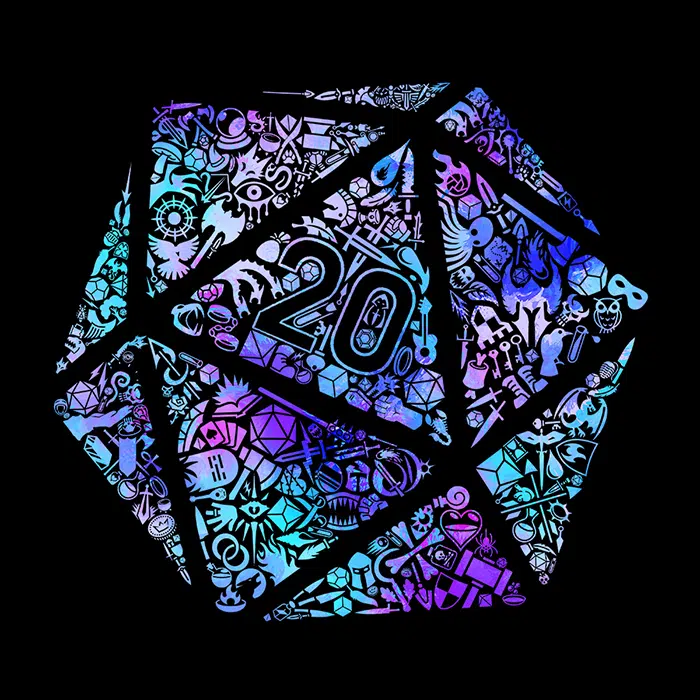
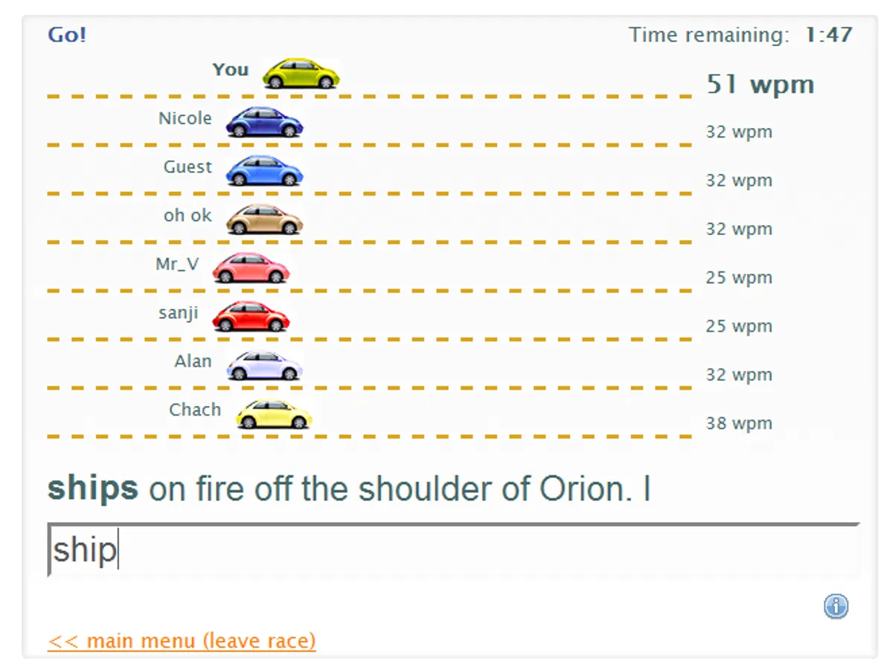
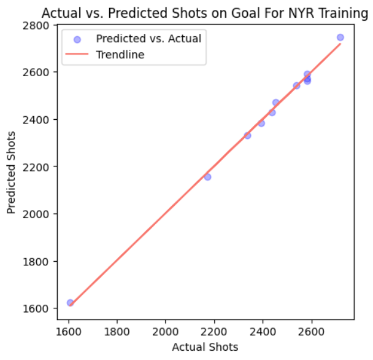
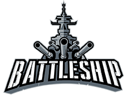

I am a recent Aurora University graduate with a Bachelor of Science in Computer Science and Mathematics, focused on building full-stack software systems, backend services, and data-driven analytical tools. My work includes leading the development of a full-stack Dungeons & Dragons Performance Assistant that combines FastAPI, React, TypeScript, MongoDB, and multi-criteria recommendation logic, as well as validating its recommendations through statistical analysis using ANOVA and multiple linear regression. I am currently seeking opportunities in software engineering, backend or full-stack development, data analysis, or applied data science where I can contribute strong technical problem-solving, quantitative reasoning, and end-to-end project ownership.
Dungeons & Dragons Performance Assistant is a full-stack combat simulation and recommendation platform developed for a Software Engineering Capstone project. As project lead, I coordinated a 3-person team, assigned feature ownership, tracked progress against faculty requirements, and reviewed contributions for production readiness. I architected core backend workflows using Python and FastAPI, integrated them with a React/TypeScript frontend, and managed persistent encounter-state data through MongoDB Atlas. The system uses Pareto front filtering and TOPSIS scoring to rank combat actions across success probability, expected damage, action impact, positioning, and broader encounter context. Analysis of 160+ observed outcomes found that top-ranked recommendations achieved 44.7% higher mean realized utility than lower-ranked alternatives. I also supported automated testing, CI/CD, deployment automation, and release verification.
View Project
Developed a Python-based D&D combat analytics engine that models action outcomes from encounter, player, and enemy parameters, calculating probability of success, expected damage, and action-impact metrics for real-time decision support.
View Project
Worked with a team of programmers to build a custom database on PHPMyAdmin using SQL that contains a large subset of data scraped from several websites that held statistics created from the hit website typeracer.
View Project
Partnered with one teammate to compile and refine 14 years of NHL data in Python, applying machine-learning regression models with scikit-learn to forecast team shot counts with 90% accuracy.
View ProjectUsed multiple probability distributions to find winrate percentages on a certain amount of games between average and professional players. Iterated and scraped through multiple sites containing character data using BeautifulSoup, and compared both average and professional character winrates depending on matchups and individual stages.
View Project
Used Object Oriented Design to create an iconic front-end board-game playable via browser against bots.
View ProjectCreated a fully playable Yahtzee game online via browser. Used JSON to store game data between sessions for continuous gameplay.
View ProjectHelped students reinforce understanding of mathematical and programming materials such as tutoring calculus, object oriented design, and discrete proofing techniques.
Handled cashiering duties. Assisted with store upkeep by restocking and returning items to maintain a clean, organized environment. Provided customer service by answering inquiries and helping with product selection, contributing to a positive shopping experience.
Maintained a clean and orderly store by facing products and ensuring shelves were well-stocked and organized. Supported a positive customer experience by providing assistance, answering questions, and helping with product locations.
Handled cashiering duties. Assisted with store upkeep by restocking and returning items to maintain a clean, organized environment. Provided customer service by answering inquiries and helping with product selection, contributing to a positive shopping experience.